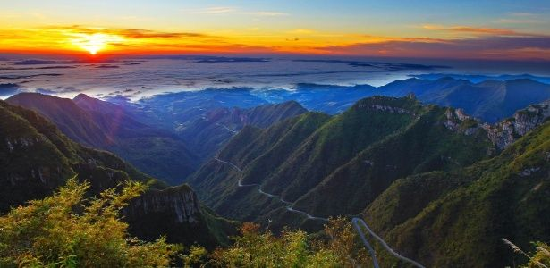
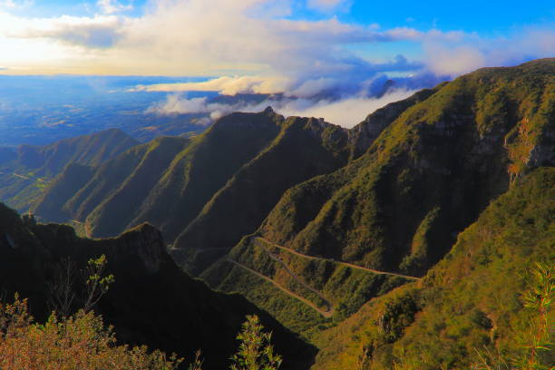
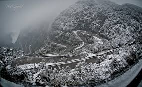
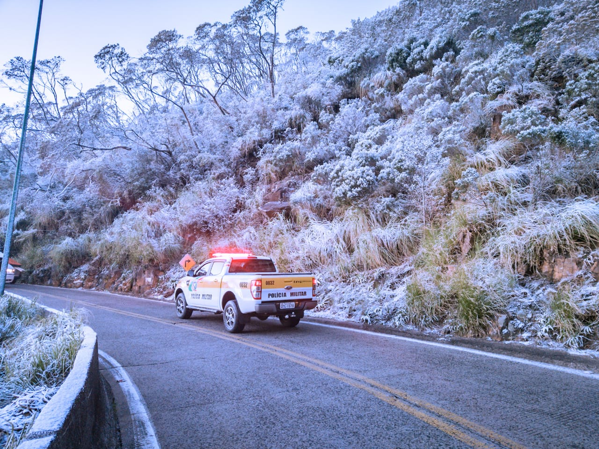

Serra do Rio do Castro
Uma rota paranaense pouco conhecida, com subidas íngremes, curvas fechadas e vistas surpreendentes da região serrana.

Sobre a Rota
A Serra do Rio do Castro é ideal para os que buscam adrenalina e silêncio nas montanhas. Essa estrada escondida no Paraná reserva curvas fechadas, subidas desafiadoras e mirantes com vistas surpreendentes. Um tesouro pouco conhecido, mas valorizado por quem gosta de estrada e natureza bruta.
Informações rápidas
- Estado: Paraná
- Ponto inicial: Desconhecido
- Ponto final: Desconhecido
- Distância: Estimativa não disponível
- Piso: Asfalto e trechos de terra
- Dificuldade: Alta
- Ideal para: Aventureiros e trilheiros
Galeria



